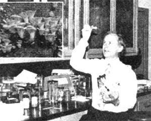
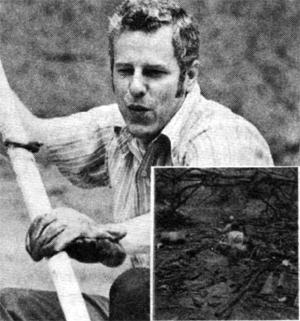
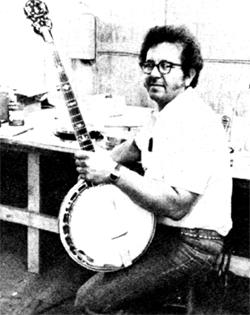
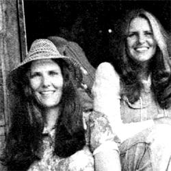
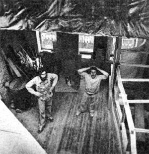
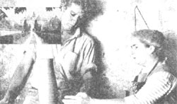

In celebration of little-known MOTHER-type folks from all over.
Rumpelstiltskin could turn straw into gold . . . so they say. But the rest of the world-in its effort to make use of the most abundant of agricultural wastesmost with little or no visible success . . . until Dr. Ralph H. Kurtzman, Jr. came along. Dr. Kurtzman-biochemist and plant pathologist with the Department of Agriculture's Western Regional Laboratory in Berkeley, California-has discovered a method for turning straw into mushrooms! "Not the common button variety," says Dr. Kurtzman, "but oyster mushrooms . . . Pleurotus ostreatus. A ton of straw will produce about an equal weight of the fungi, leaving behind-to boot-about 700 pounds of nitrate-rich soil residue to use as fertilizer. Though I've not yet tested all varieties of straw, rice and wheat straw have proved to be favorable growing mediums for the mushroom spawn . . . whereas barley straw has not.
"In addition," says Dr. Kurtzman, "shredded magazines can be mixed with the straw as a medium for growing the crop." Dr. Kurtzman's experiments with magazine paper have opened the door to recycling a paper product which has generally been considered unusable because of its clay coating. According to Dr. Kurtzman, as long as at least one half of the mixture is straw, the mushroom spawn growing in it should do quite well. And although magazine inks contain a degree of lead, Dr. Kurtzman's recent X-ray spectrometer test showed absolutely no lead transfer from the paper to the mushrooms.
"Moreover," Ralph Kurtzman asserts, "oyster mushrooms are capable of playing an important role in the use of straw to produce beef." Straw is normally not used as cattle feed because it contains lignin, a complex chemical which must be broken down before the fodder can provide any nutritional benefit for the livestock. Oyster mushrooms have the ability to break down the lignin, thus transforming straw into wholesome cattle feed. This means that growers of oyster mushrooms can harvest some o1 their crop for the table and retain a quantity of feed for their livestock as well. "Economically," says Dr. Kurtzman, "oyster mushrooms offer an excellent method of utilizing straw. If all the straw in the U.S. were used for mushroom production, the yield would be approximately 18,000 pounds of the crop per person per year." Perhaps we should divert a portion of this country's wasted straw to the Department of Agriculture's resident Rumpelstiltskin: Dr. Ralph H. Kurtzman, Jr. -Toys Morgan.
Some university professors confine themselves to ivory towers . . . and although they may know "the name of the game"-their knowledge rarely gets far beyond the level of research laboratories and scholarly journals. Yet 1 bed down with a professor who takes his message straight to the people.
Long ago Wayne P. Mueller-head of the Department of Biology at the University of Evansville in Indiana-realized that, though scientists can make juices bubble in test tubes and grow extra legs on salamanders, they will not be the ones to solve the earth's ecological problems. Rather . . . the world's masses will determine whether or not the earth will be worth inheriting. And for that very reason, Dr. Mueller set out to spread the ecological word to the public. Now, once a month, Wayne writes a newsletter called "Environmental Earth watch", filled with current ecological news and environmental resource material. This he sends to teachers, politicians, and news media across the country as a reminder of the ecological problems we now face and are likely to experience in the not-too-far-off future. In addition, Wayne helped develop the University of Evansville's environmental studies program . . . which he now directs. The program incorporates a variety of disciplines . . . all with a common goal: to alter our social and economic patterns to order to produce a climate in which this fragile earth can be sustained. Dr. Mueller makes a point of teaching his students in the best laboratory available: the great out-of-doors. Studies include the canoeing of streams to locate pollution, the tramping of soil banks for the study of the effects of strip mining, bicycle trips along the span of shopping center parking lots to calculate the loss of vegetation to concrete-covered Boll, and the fine-tooth inspection of legislation that affects the quality of our environment. Wayne's students also tackle the practical problems of newspaper composting, methane generation, solar energy collection, waste recycling, and compost toilet design . . . when they're not lobbying local politicians about environmental matters. Dr. Mueller, furthermore, lives the life that he's been teaching for so long. He's an avid gardener with an impressive compost pile-who eats low on the food chain, heats with solar energy and woodburning stoves, and habitually recycles his way through life. All in all, Dr. Wayne P. Mueller is a darn good spokesman to have on our side . . . and I, for one, am plumb proud of him. -Jo Frohbieter-Mueller.
Seven years ago, after a long stretch working in oil fields, machine shops, and automobile repair services, Don Thomas of Shawnee, Oklahoma gave up what job security he had to return to his first love . . . music.
At first, Don set out to teach guitar and banjo . . . but he soon found himself fascinated by the design of stringed instruments and decided he ought to attempt the creation of a banjo of his own. "In the beginning," says Don, "I didn't know a thing about the process of crafting a banjo and, consequently, it took me three long months to complete my first one. Today, though, I can put together two banjos in about three weeks' time . . . and even at that rate, I can't keep pace with my orders! " Thomas hand makes all the components for his instruments except the heads and some of the small metal parts which do not influence the quality of the instruments' sound. Don mainly constructs his banjos from walnut and maple (sometimes mahogany or cherry) . . . he has mastered the art of wood inlay . . . and he incorporates as much brass as possible into the flanges and coordinator rods on his music makers to "better the instruments' vibration". But the real secret of Don Thomas' success-the real magic of his banjos lies in his hand-cast tone rings (which were the subject of a good deal of experimentation). Don's endeavors with different mixtures of alloys in the casting process provide him with rings of a powerful tonal quality that is consistent in each of his instruments. "I can recognize one of my banjos," says Thomas, "without ever seeing it . . . and I can Improve the tonal quality of even a cheap, commercially made instrument by substituting my own tone rings." Don Thomas banjos are now being purchased across the nation . . . and, on occasion, in other countries as well. But Don swears he'll never mass produce his instruments. "I make each of my banjos so I'd be proud to play it with my own band, the Arbuckle Mountain Boys," says Don. "That's one reason folks have come to like and trust my work: Sure I aim to please my customers . . . but first and foremost, I aim to please me. "-Val Pips.
Why would two young, college-educated Tennessee cousins quit their library jobs to gallivant around the country . . . wearing tattered overalls and funky hats, sleeping in the back of a pickup truck, and telling wild and fanciful stories to anyone who will listen? Well, Barbara Freeman and Connie Regan have done just that. . . and all in an effort to make their dream come true: Barbara and Connie are professional storytellers! The going wasn't easy when the two first started... the storytelling pickin's were terribly slim. But before long it was summer-the busy season-and the girls' enthusiasm and ebullient spirit had made its mark. Soon Barbara and Connie were traveling from folk festival to coffeehouse to library to public school to college campus . . . telling tales both old and new and enchanting both old and young. And folks-ever since-from Canada to the deepest South have found themselves captivated by the cousins' magnetic folk telling . . . be it a dramatization of a children's book, a "ha'nt" tale, or a risque' ditty sung behind the girls' yellow Datsun pickup truck. In the colder months-when things are slow-Connie and Barbara "settle" a spell: They take up residence and work their own community . . . conducting storytelling workshops . . . teaching college folktale courses . . . leading music, drama, and puppeteering activities in the local libraries and public schools . . . and storing up tales for their summer travels by swapping yarns with their elderly neighbors. Barbara and Connie have created a unique alternative lifestyle for themselves through the revival of the storytelling craft. For much too long the art has been an all-but-forgotten part of our heritage . . . and in our modern highspeed, media-oriented society there are still those who've not yet been touched by the magic of folktale. Barbara and Connie, of course, aim to change all that! -Douglas Elliott.
From the outside the townhouse at 49 Garden Street in Boston is indistinguishable from its Beacon Hill neighbors: a narrow, brick structure . . . a bit run-down . . . much the same as all the rest. Inside, however, the once burnedout shell is being converted into the first solar-heated townhouse in Boston. Forty-nine Garden Street is the residence of Michael Epp and Bob Shannon . . . as well as the home of People-Space, their three-year-old, twoperson, alternative architectural business. PeopleSpace is part of the burgeoning New England community of architectural firms concerned with environmentally sound design. And the renovated townhouse on which Bob and Mike are working has a PeopleSpace feature of which they're particularly proud: solar collectors which Mike and Bob designed and now distribute through their firm. The Epp-Shannon collectors have a single-cast body, intruded with a foam backing composed of a polyester resin (essentially fiberglass) and 26% graphite. These components, say Bob and Mike, will never corrode and are about 70% less expensive than the copper or aluminum of which most commercially produced collector panels are made. In addition, the panels are light in weight and can be installed by one person with a minimum of difficulty. Michael criticizes today's major commercial producer of solar collectorsGeneral Electric-for doing its best to make a simple process into something complex. "Solar heating," says Mike, "is essentially a plumbing technology, but GE would like to turn it into a more profitable aerospace technology." Mike and Bob are working for the time when solar energy can become a decentralized energy source competitive with the centralized sources of the monopolies. And the two are quick to point out that "concerned energy consumers do not have to let GE monopolize the solar heating industry". As the People-Space founders have demonstrated by example, the consumer can easily "do it himor herself" . . . and with the assistance of the Epp-Shannon solar collectors, Mike and Bob hope you will do just that! -Erlc Leif Davin.
Everyone knew the idea was mad. It was mad for the couple to move 100 miles from Paris . . . mad to bury themselves in the country with one small baby and another on the way . . . and mad to move into a huge, abandoned, tumbledown castle with no visible means of support.
But Jeanne and Norbert Pierlot-she a ceramic artist and he an aspiring actorwent ahead with the plan despite what the people were saying. And-with the help of friends and a great deal of determination-the Pierlot family moved into Chateau Ratilly. That was 25 years ago and the first winter was so fierce that the castle's cold chambers drove the family back to Paris again. But Norbert resourcefully signed up with a traveling drama troupe and used each new locale of his theatrical openings to display his wife's homemade pottery in the local boutiques. Soon the resulting orders were filled, Ratllly roofing was patched, and the Pierlotsnew baby and all-were able to move back to the country in time for spring.
Jeanne then began advertising for pottery students and Norbert gave up the theater to master the art of creating stoneware. Students brought in fees, the fees paid for still more repairs, and the old castle quickly began to take shape.
Each summer Ratilly became more inviting, and each year the students and visitors came in greater numbers. Even famous artistsVieira da Silva, Chilida, Geer van de Velde, and Caldercame to display their valued masterpieces on the walls of the ancient castle.
And then at long last-in 1976Jeanne and Norbert Pierlot received the ultimate tribute: The Paris Musee des Arts Decoratifs exhibited Jeanne's silvery glazed tableware side by side with the nonutilitarian sculptured forms of her husband's crafted stoneware ... a joint exhibition of the sum of a life of art and an art of life.
Mad did they once say of the Pierlots?-Mavis Guinard.
Twentieth century horseloggers?: They exist in Springfield, Oregon. Steve Greenberg and Paul Irvin got their start in the business with a year of logging apprenticeship . . when they hired on with then 72-year-old Ira Brownson to learn the trade. Their training, they recall, included equal parts of horse psychology, harness repair, and stamina building ... after which the men felt they were ready to branch out on their own. And so Horse and Harness Logging, Inc. was formedalmost three years ago-complete with three teams of Belgian horses, harnesses, and a variety of other necessary equipment.
"And getting those horses," says Steve, "the right ones, that is, was a large part of the battle. They cost anywhere from $1,500 to $2,000 each ... and even after paying such hefty prices, you can't be sure if the horses you've just purchased will work logs or not until they're confronted with a fallen tree."
But how does a small horselogging operation survive in this age of heavy-tractor-and-airlift logging? And why would the forest service be interested in contracting for what has to be the slowest form of tree removal around? Steve answers by pointing to a clear-cut area where four years ago all the trees were cleaned out ... save some key seed pines that served to propagate new seedlings and shelter others planted by the forest service. "Now that those young trees can stand on their own," says Steve, "the older ones will be logged. But tractors don't see the young pines ... only people on foot do, and that's where we come in.
"We know we can't compete with the giant logging corporations, " Steve continues, "but we're kept mighty busy by the jobs that the big guys won't bother with." Steve, his wife Joan, and Paul are certainly not in the process of getting rich: Home for the trio is a couple of used travel trailers, and Joan can't quite remember where she left her last dress ... but no one's showing any signs of quitting just yet.
"I like the quiet," Steve remarks, as he studies the surrounding mountains that he shares with the blue jays and chipmunks. "As long as you're not hung up on hot showers and the like, this life is about as healthful as any I can think of."-Vella Munn.
Five years ago, Sunday Ajayia young Nigerian biologist at the University of Ibadan-l-ooked hard at his country's booming population (an estimated 80 million) and dwindling food supplies (especially animal protein) and decided to do something about it.
"I concluded," recalls Ajayi, "that a species of wild animal would have to be domesticated for food ... and quickly! This brought back my boyhood, when my friends and I would trap African giant rats and skewer, roast, or fry them to eat. One good-sized rat would feed four, and the meat was really quite tender ... somewhat like what Americans call 'rabbit'.
" Sunday proceeded to run a nationwide survey which showed that 71.5% of his non-Muslim countrymen would be willing to eat rat. So, with a ready market awaiting him, Ajayi trekked out to a deserted farm with his assistants, painstakingly dug up and studied various rat burrows, and returned to the lab with forty vicious specimens.
These, it was noted, reproduced far more frequently when fed a steady supply of food in captivity than they had in nature. And, surprisingly enough, the rats born in the lab proved to be both docile and internally and externally free of parasites.
"But best of all," beams Sunday, "rat dinners are becoming more and more popular." Early in 1976 extension agents began explaining rat husbandry to farmers in several Nigerian states. (Americans interested in rat raising [Sunday's ,techniques can be applied to American species] should write to Dr. S. Ajayi, Department of Forest Resources Management, University of Ibadan, Ibadan, Nigeria. And do send along a couple of dollars to cover the cost of your reply.)
Sunday Ajayi is delighted with the response to his project thus far. "So much so, in fact," says Sunday, "that I can't wait to get back to the field ... to begin domesticating another species."Gene Ulansky.
How do you get 20,000 big-city school children to begin to learn the basics of self-sufficiency? "The best way," says Pete Wotowiec, "is to have each and every youngster raise a vegetable garden of his or her own." And that's exactly what Pete has been doing as supervisor of the largest school gardening program in the country to date ... centeredat present-in the Cleveland, Ohio public school system.
Each spring Pete and his staff broadcast classroom gardening instruction through school radio station WBOE, emphasizing the most basic gardening practices: marking rows, sowing seeds, and planting ... including-at times-various different cultural gardening techniques. Then all classroom instruction is quickly put into action in the field.
Those students who have the space and tools to garden at home purchase kits of seeds, plants, and fertilizer with which to start their own home plots. Those with no home space sign up to garden in one of the 15 school tracts located throughout the city.
"Our young gardeners raise produce with a total value of more than $700,000 per year," claims Pete. "And each child keeps all the food he or she produces. This means that our youngsters make quite a significant contribution to their family food budgets." And-in addition-the fledgling gardeners apply just about every subject studied in class to their work in the field. Measuring, weighing, reading directions, keeping notes, analyzing the weather, and identifying insects are among the many and varied gardening tasks the students perform regularly.
"Gardening," says Pete, "should be an integral part of the basic education of every child. Vegetables are not the only living things that grow in our program's gardens ... 20,000 Cleveland youngsters do quite a bit of growing there themselves! " -Clarence Kinkelaar.
Know someonewhether sang or unsungwho's doing something of merit in wholistic gardening, alternative energy, environmental conservation, self-employment, low-cost house construction, or any of the other fields of endeavor featured in MOTHER? A factfilled, 450. to SW word essay that describes that person, accompanied by a sharp, glossy, black-and-white photo, will-upon being accepted for we in PROFILESearn you a fast, flat $50. Send it to: PROFILES Editor, THE Mother Earth News, P.O. Box 70, Hendersonville, N.C. 28739
|
 DR. KURTZMAN) PHOTO BY TOYA MORGAN (MUSHROOM) PHOTO SUPPLIED BY AGRICULTURAL RESEARCH SERVICE, USDA |
 PHOTOS BY MIKE KEATING |
 PHOTOS BY THE AUTHOR |
|
 PHOTOS BY MICHAEL BADHAIR WILLAIMS |
 PHOTOS BY ERICA A.ROTH |
 |
|
|
|
|